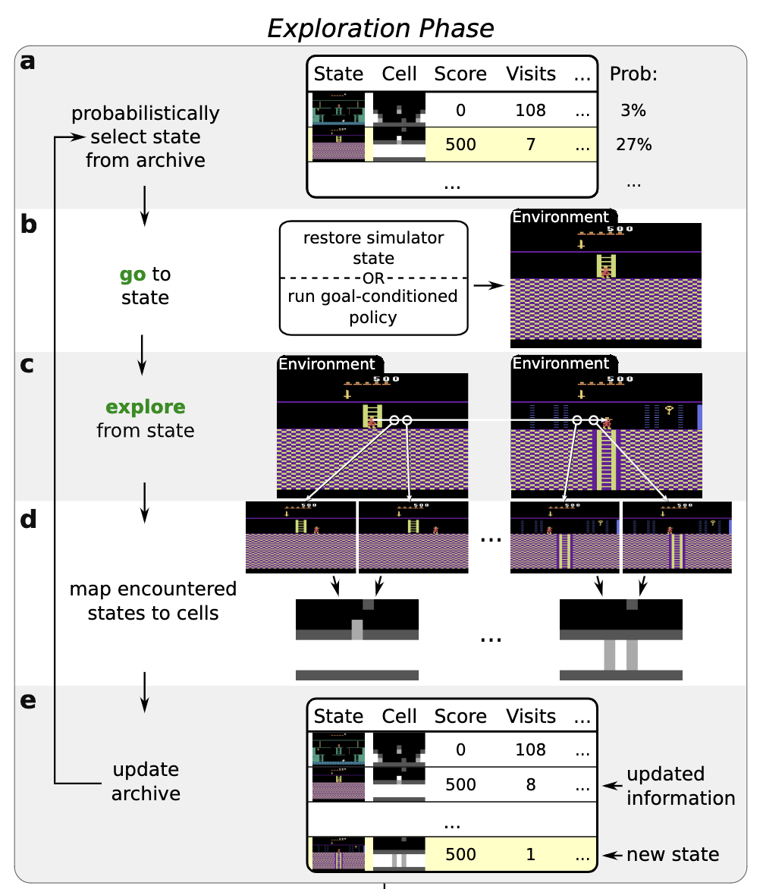
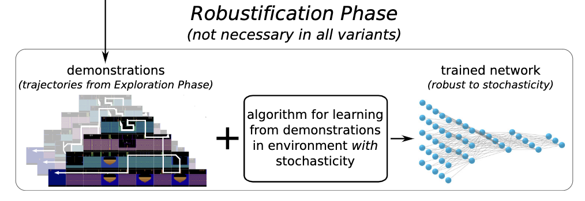
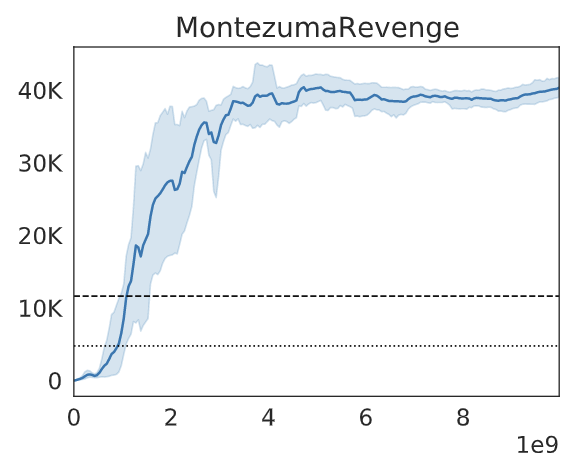
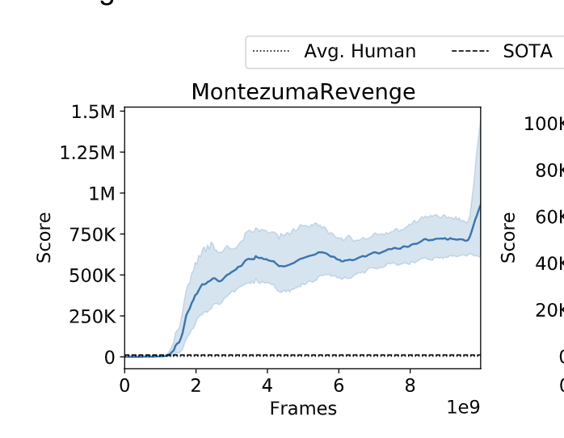

[TOC]
- Title: Go-Explore: a New Approach for Hard-Exploration Problems
- Author: Adrien Ecoffet et. al.
- Publish Year: 2021
- Review Date: Nov 2021
Summary of paper
This needs to be only 1-3 sentences, but it demonstrates that you understand the paper and, moreover, can summarize it more concisely than the author in his abstract.
The author hypothesised that there are two main issues that prevent DRL agents from achieving high score in exploration-hard game (e.g., Montezuma’s Revenge)
- Detachment: the agent just forget how to reach the promising frontier state (think about “I wanna” game) due to poor policy, and thus waste a lot of computational power return to the frontier states
- why return to the frontier state, it is because exploring from the frontier state is more efficient than exploring from the starting point for each episode. (think about I wanna game)
- Derailment: the agent face difficulty obtain a balanced explore-exploit trade off.
- e.g., the agent may just underrate a repeated but necessary path (assign this path with a low intrinsic reward score) and then start to explore without completing this necessary path
In order to solve this, the author introduced a new training algorithm named “Go-Explore”
 |
|---|
 |
It consists of two phase
Exploration phase
It builds an archive of the different states it has visited in the environment, cache the information from the simulator so that it ensure the agent can immediately return to the state (like Save and Load mechanism)
The game states in Atari game is huge and thus we cannot store evey frame in the archive. Instead, we group state with the same features (features are selected by domain knowledge) into one cell. And each cell only stores one state that obtains the highest score among other similar states.
By first returning before exploring, Go-Explore avoids derailment by minimising exploration when returning (thus minimising failure to return) after which it can purely focus on exploration.
Robustification phase
The best trajectories in the archive are not robust to stochasticity or unexpected outcome. (e.g., a robot may slip and miss a crucial turn, invalidating the entire trajectory). To solve this issue, a policy is required to control the agent. The policy is trained using backward algorithm so as to match the demonstration trajectory.
Some key terms
The backward algorithm
The backward algorithm places the agent close to the end of the trajectory and runs PPO until the performance of the agent matches that of the demonstration. Once that is achieved, the agent’s starting point is moved closer to the trajectory’s begining and process is repeated
Domain knowledge representation
this is used to classify states into different cells. Domain knowledge is essential for extensive exploration games.
 |
|---|
 |
| It shows that with domain knowledge, the exploration phase will reach really high score, hence during the robustification phase, the agent is able to obtain high quality demonstrations. |
Good things about the paper (one paragraph)
This is not always necessary, especially when the review is generally favorable. However, it is strongly recommended if the review is critical. Such introductions are good psychology if you want the author to drastically revise the paper.
The proposed model achieve SOTA performance on Montezuma’s Revenge
Major comments
Discuss the author’s assumptions, technical approach, analysis, results, conclusions, reference, etc. Be constructive, if possible, by suggesting improvements.
The author did not present their domain knowledge representation for Montezuma’s Revenge game, which is essential for their cell formation process. (i.e., group similar states into one cluster)
But in fact, providing the domain knowledge (e.g., providing complete map to the agent) may already violate the original purpose of the extensive exploration games.
Potential future work
List what you can improve from the work
How to learn features to “structure” the exploration using NLP technique rather than hand-crafted features using domain knowledge.
Given the fact that the text corpus for Montezuma’s Revenge is scarce, extract abstract and general knowledge is a difficult task.